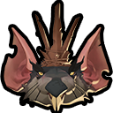
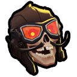
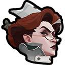

Update: City Never Sleeps
The "City Never Sleeps" update is one of the most massive patches in Deadlock history. It significantly expanded the hero roster and completely overhauled the map.
Six New Heroes
The update introduced six brand new characters to the roster:









Valve staggered their release, allowing the community to vote on the order they entered the game, with heroes dropping every Tuesday and Friday.
The Map Overhaul
The "Cursed Apple" map (New York) received a major visual rework. The lanes were renamed (Broadway, Greenwich, York), and new neutral camps called "Haunts" replaced the old jungle creeps. New interactive elements like Steam Vents (for invisibility) and Healing Snacks were added to the environment.
The Broker
A temporary merchant appeared who sold powerful "Corrupted" items. These items offered high stats but came with random drawbacks, adding a major risk/reward element to the in-game shop.